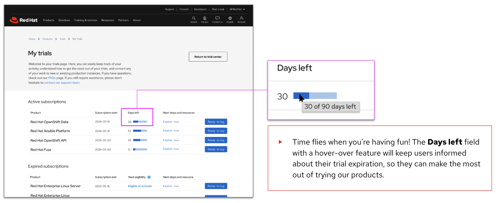
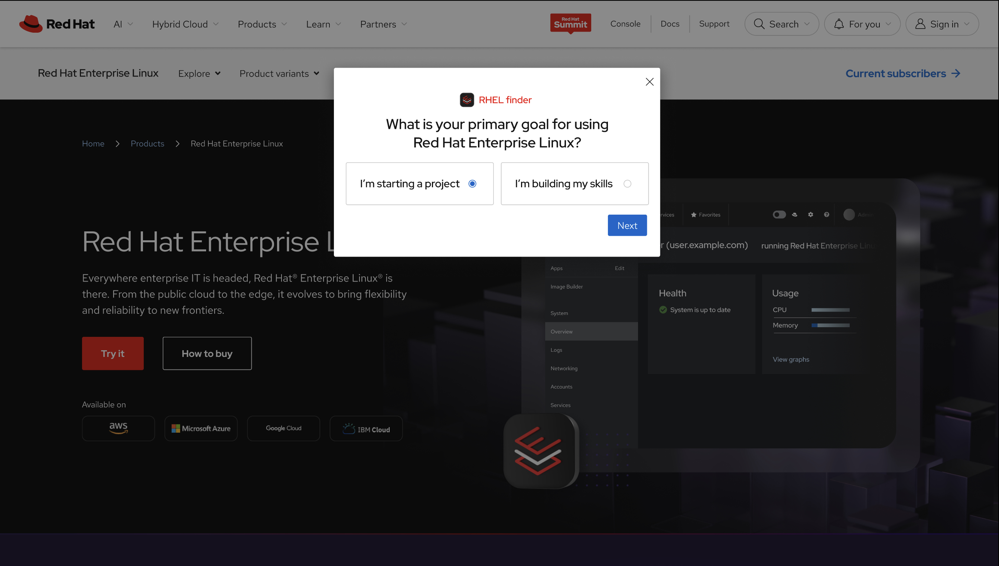

Enterprise Platform Design
Designing subscription ecosystems, onboarding journeys, customer portals, entitlement systems, identity services, and enterprise SaaS experiences that simplify technical complexity at scale.
Principal UX Designer specializing in enterprise SaaS, platform strategy, customer acquisition ecosystems, and service design for Fortune 500 organizations.
For more than twenty years, I've partnered with product, engineering, analytics, and executive stakeholders to transform technical complexity into intuitive customer experiences that drive adoption, improve operational efficiency, and create measurable business value.
View WorkDesigning subscription ecosystems, onboarding journeys, customer portals, entitlement systems, identity services, and enterprise SaaS experiences that simplify technical complexity at scale.
Aligning customer needs, business objectives, and technical constraints through systems thinking, journey orchestration, experience architecture, and service design methodologies.
Driving cross-functional alignment, facilitating strategic workshops, leading UX research initiatives, mentoring designers, and influencing product direction across large organizations.

Redesigned Red Hat's global product trial ecosystem spanning self-service onboarding, marketplace activations, subscription management, and sales-assisted evaluation workflows.
Generated $39.5M in Closed Won opportunity value while improving activation workflows, subscription visibility, and enterprise-scale acquisition experiences.
View Case Study
Replaced a static product download experience with an intent-based routing system that guides developers, architects, and enterprise customers toward the correct deployment path.
Introduced decision architecture, personalization strategy, and experience orchestration concepts that helped shape the future direction of Red Hat's digital acquisition ecosystem.
View Case Study
Designed a self-service entitlement platform enabling IBM customers to activate Red Hat subscriptions without requiring manual seller intervention.
Established a scalable entitlement model that reduced friction, improved customer activation, and supported cross-company business objectives.
View Case Study
How thoughtful UX writing and interaction design reduce friction during onboarding, account setup, and customer activation experiences.
Read Article on UXPA Magazine
Lessons learned from facilitating design collaboration while distributed product teams transitioned to fully remote work environments.
Read Article on Red Hat